🎭 Kanohi — The Masks of Power 🎭
Kanohi are masks worn by many inhabitants of the Bionicle universe. Many Kanohi grant their wearers powers, and some species must wear masks to function at full capacity. Kanohi attach magnetically. Most sapient species can wear them. Matoran, Toa, and Turaga suffer negative effects without a mask such as dizziness or falling into a coma-like state. Makuta need Kanohi to prevent their antidermis from leaking. Others can wear masks without ill effects. Some Kanohi contain powers accessed via focus. Their energy is self-sustaining for millennia but not inexhaustible (though no known mask has run out in over 100,000 years). If powered Kanohi are cracked or broken, they may not function properly or at all. Kanohi can be stored in a shrine called a suva shrine. If the suva is linked to a Toa, that Toa can mentally summon Kanohi masks to them, switching between masks by teleporting their old mask to their suva and their new mask to their face. Masks have standard shapes indicating power/level, but artists add flair. Some masks are deliberately forged to hide their powers. Most Kanohi adopt the wearer's color scheme (default gray when not worn); powerless Matoran masks are manually colored. Kanohi contain a portion of the wearer's spirit/consciousness imprint. This imprint can be used to resurrect recently deceased beings by infusing the mask with life force.
📿 Powerless Masks (Matoran)
The most common type of mask is the powerless masks worn by Matoran. The process used to make the mask causes the energy to leak out, which is why these masks have no powers. However, they are needed for Matoran to live and function properly. Although Matoran can wear and sense the power in a Great or Noble mask, they lack the mental discipline needed to access its powers. Powerless Kanohi were typically forged from level 1 through level 6 Kanoka, however the difference between the six levels makes no difference on the resulting mask. Matoran masks can become Great masks when their wearer is transformed into a Toa by Toa power. Powerless masks generally do not have their own assigned shape, instead commonly being forged in either of their powers' respective Great or Noble shape.
🔵 Noble Kanohi (Turaga)
Noble masks, which are about half as powerful as Great masks, are worn by Turaga. They are transformed from Great masks when a Toa is turned into a Turaga. Toa, however, can also access the power of Noble Masks. Noble Kanohi are made from a level 7 Kanoka.
Huna
Power: Invisibility
First Appearance: Turaga Vakama
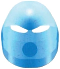
Rau
Power: Translation
First Appearance: Turaga Nokama
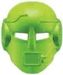
Mahiki
Power: Illusion
First Appearance: Turaga Matau
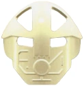
Komau
Power: Mind Control
First Appearance: Turaga Onewa
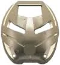
Ruru
Power: Night Vision
First Appearance: Turaga Whenua
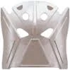
Matatu
Power: Telekinesis
First Appearance: Turaga Nuju
🔴 Great Kanohi (Toa Mata)
Great masks offer a much stronger mask power than that of Noble Kanohi. While Toa are the most well-known beings to use masks, many other species are known to be able to use mask powers. Most powered masks worn are of the Great variety, and come in a myriad of abilities. Great Kanohi are notably more durable than their less powered versions, and they can even survive in lava for a short time.
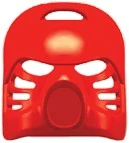
Hau
Power: Shielding
First Appearance: Tahu (Toa Mata)
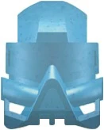
Kaukau
Power: Water Breathing
First Appearance: Gali (Toa Mata)
Akaku
Power: X-Ray Vision
First Appearance: Kopaka (Toa Mata)
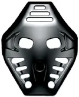
Pakari
Power: Strength
First Appearance: Onua (Toa Mata)
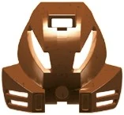
Kakama
Power: Speed
First Appearance: Pohatu (Toa Mata)
Miru
Power: Levitation
First Appearance: Lewa (Toa Mata)
🟡 Kanohi Nuva (Toa Nuva)
More powerful than normal masks, the Kanohi Nuva were created when the Toa Mata were immersed in energized protodermis and became the Toa Nuva. When a mask is immersed in energized protodermis, it will become a Kanohi Nuva if it is destined to do so. Users of Kanohi Nuva can grant their power to ones surrounding them, and their powers are stronger and/or can last longer.
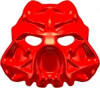
Hau Nuva
Power: Enhanced Shielding
First Appearance: Tahu Nuva
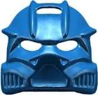
Kaukau Nuva
Power: Enhanced Water Breathing
First Appearance: Gali Nuva
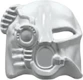
Akaku Nuva
Power: Enhanced X-Ray Vision
First Appearance: Kopaka Nuva
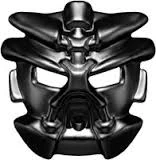
Pakari Nuva
Power: Enhanced Strength
First Appearance: Onua Nuva
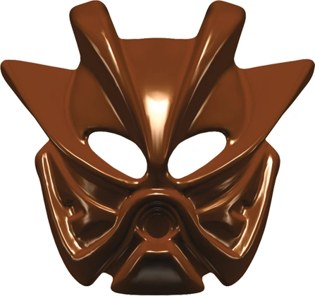
Kakama Nuva
Power: Enhanced Speed
First Appearance: Pohatu Nuva
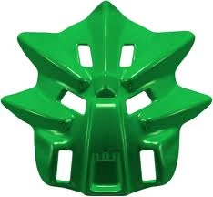
Miru Nuva
Power: Enhanced Levitation
First Appearance: Lewa Nuva
✨ Golden Kanohi
Artakha created six masks called Golden Kanohi which had the Great powers of the masks worn by the Toa Mata: Shielding, X-Ray Vision, Speed, Water Breathing, Strength, and Levitation. While these allowed the Toa to access their array of powers without relying on a suva, they could still only access the powers one at a time, and their powers were not stronger than that of normal Kanohi.
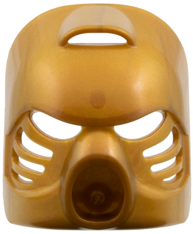
Golden Hau
Power: Shielding
First Appearance: Tahu
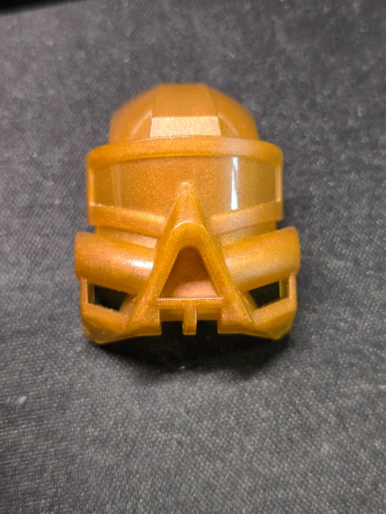
Golden Kaukau
Power: Water Breathing
First Appearance: Gali
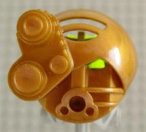
Golden Akaku
Power: X-Ray Vision
First Appearance: Kopaka
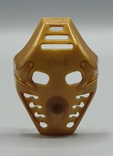
Golden Pakari
Power: Strength
First Appearance: Onua
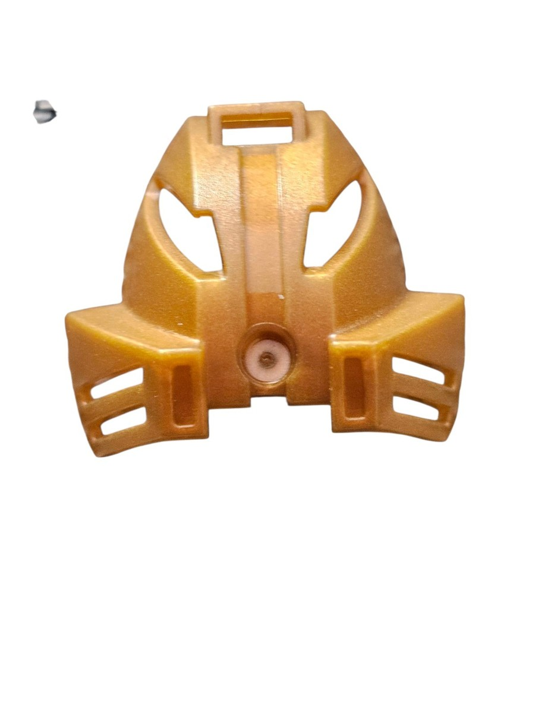
Golden Kakama
Power: Speed
First Appearance: Pohatu
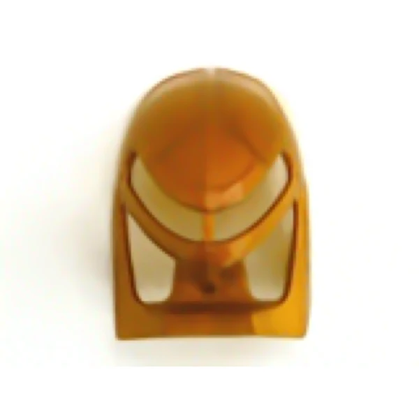
Golden Miru
Power: Levitation
First Appearance: Lewa
🏆 Legendary Kanohi
There are some extraordinary Kanohi that possess powers far beyond a normal mask; these are known as Legendary Masks. Only three are known: the Kanohi Vahi, the Mask of Time; the Kanohi Ignika, the Mask of Life; and the Mask of Creation. These masks cannot be worn by ordinary users, and often require special circumstances for their power to be accessed. If destroyed, they would unleash their powers, resulting in the break-down of a fundamental force of the Matoran universe.
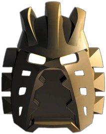
Avohkii
Power: Mask of Light
First Appearance: Takua / Takanuva

Vahi
Power: Mask of Time
First Appearance: Vakama / Tahu
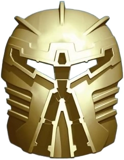
Ignika
Power: Mask of Life
First Appearance: (Beyond G1 2001-2003)
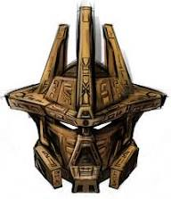
Mask of Creation
Power: Creation
First Appearance: (Beyond G1 2001-2003)